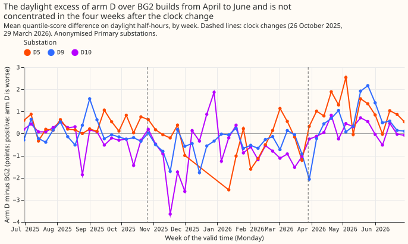
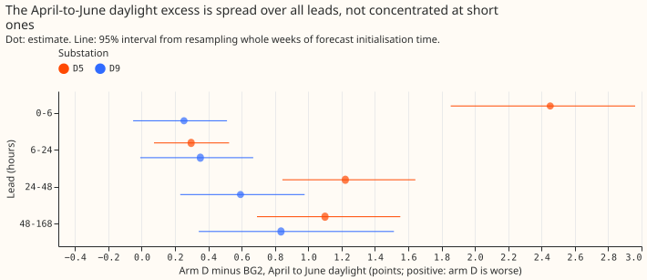
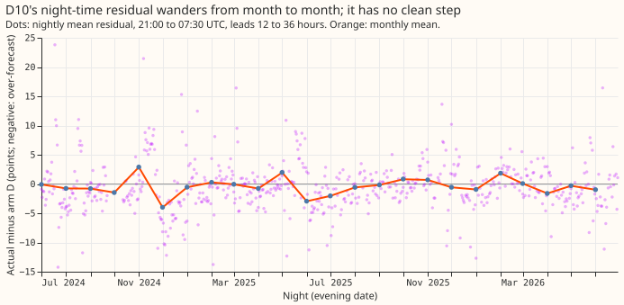
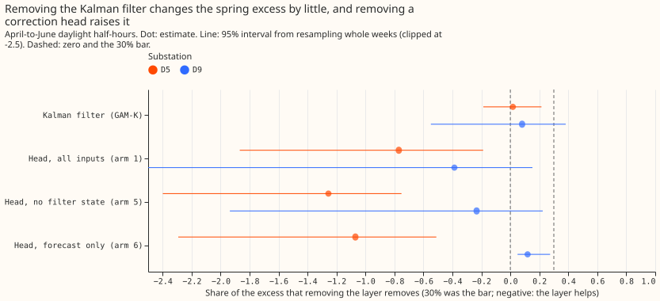

When does the best-guess demand model fall behind BG2 in spring, what causes D10's night offset, and does the error-correction layer make the spring excess worse?
The spring excess of arm D over BG2 grows with sunshine and is not a one-date step at the clock change. Arm D is our best-guess demand forecast without its neural-network head: a convex model with a Kalman filter on recent errors. BG2 is the production-style XGBoost forecast of experiment 87. We asked three questions of experiment 266's stored forecasts. When does arm D fall behind BG2? What is the night-time level error at D10? Do the Kalman filter and the neural-network correction heads make the spring excess larger? Nothing is refitted.
D5, D9, and D10 are anonymised Primary substations. The excess sits on clear midday half-hours at D5 (+1.67 points) and across the whole day at D9, at every lead. The Kalman filter changes the excess by +0.02 and +0.06 points, and at D5 the three correction heads lower it. D10's night residual (actual minus forecast) has no single step. A clock-change effect is not ruled out, because it cannot be separated from the rising sun.
The scores are quantile scores on 561,207 rows. The quantile score is twice the mean pinball loss over 11 quantiles, in points of effective capacity (percentage points of a substation's rated demand); lower is better, and "excess" means arm D's score minus BG2's. The rows cover six substations, 2025-07-02 to 2026-06-30, forecasts issued at 09:00 UTC, leads (hours ahead) 0.5 to 168, outside hand-filtered load shifts. Intervals resample whole ISO weeks of forecast initialisation time (14 weeks in April to June).
None of the three pre-registered predictions held. The excess is not concentrated within 4 weeks of the clock change or at short leads (Part 1), D10's offset is not one step (Part 3), and removing the filter or a head does not lower the excess by 30% (Part 2; refuted at D5, undecided at D9 for the filter).
Figure 1. Weekly daylight excess at D5, D9, and D10: it builds from April, with no clean step at either clock change.

Figure 2. The April-to-June excess by lead band: it is not concentrated at short leads.

Figure 3. D10's nightly residual and its monthly mean: the monthly mean wanders and shows no single step.

Figure 4. The share of the April-to-June daylight excess that removing each layer removes: no layer reaches the 30% bar.

Results
- Check that reproduces experiment 266: arm D minus BG2 in April to June is +0.319 (+0.198 to +0.430) points, the figure of experiment 266.
- Part 1, timing (predicted, and failed): the stored rows start with the forecasts issued on 1 April, so the window is forecasts issued 1 to 25 April 2026. It holds 29% of D5's April-to-June daylight excess (27% of its rows) and 10% of D9's (26% of rows); the required share was 50%. The shares are point estimates without intervals. Leads under 24 hours hold 14% of D5's excess (14% of rows) and 6% of D9's (14% of rows); the required share was 50%. Neither the 4-week test nor the 24-hour test is met at either substation, so the excess does not concentrate in either window. The 0-to-6-hour band holds more of the excess than of the rows at D5 (+2.45 points against +0.30 at 6 to 24 hours), so BG2's use of recent power is not excluded as a contributor at the shortest leads.
- Lead and sunshine, April to June daylight (points): D5 +2.45 at 0 to 6 hours, +0.30 at 6 to 24, +1.22 at 24 to 48, +1.10 at 48 to 168; D9 +0.25, +0.35, +0.59, +0.84. By realised clear-sky index at D5: clear +1.67 (+1.23 to +2.11), mixed +0.72, overcast -0.31 (-0.90 to +0.35). At D9: clear +1.02, mixed +0.47, overcast +0.25.
- Hour of day, April to June, local time (hour of the half-hour's start): D5's excess is +2.0 to +3.5 points from 11:00 to 15:00 and near zero at night. D9's is +0.4 to +1.0 from 06:00 to 23:00 and +0.1 to +0.2 from 00:00 to 05:00, so D9's excess is not shaped like solar output alone.
- Clock-change comparison (descriptive): D5's daylight gap is -0.03 in the 4 weeks before 29 March 2026 and +1.12 in the 4 weeks after, but in the autumn it falls from +0.52 to +0.13 across 26 October 2025. The jump at D5 and the fall in autumn both match sun elevation and sunshine, and this design cannot separate a clock-change effect from them. D10 shows a larger jump near the same date: its night excess goes from -0.13 (-0.25 to +0.01) in the 4 weeks before 29 March to +0.89 (+0.70 to +1.08) in the 4 weeks after, and in autumn from +0.92 to -0.85 (-2.40 to +0.87); its daylight excess goes from -1.03 to +0.16.
- Season at D5 and D9: July to September daylight excess is +0.31 (D5) and +0.17 (D9), against +1.12 and +0.73 in April to June. D10's April-to-June excess is +0.20 points by day and +0.60 at night.
- Part 3, D10 night level (predicted, and failed): over 635 nights (2024-07 to 2026-06, leads 12 to 36 hours, rows outside hand-filtered load shifts, which is a subset of the rows the earlier experiments scored), the best single-step fit explains 0.9% of the variance of the nightly mean residual; a fit on the 24 year-months explains 12.7% (9.4% adjusted for its 24 parameters, against 0.6% for the step) and on temperature band and year-month 13.3%. Within the scored year the step explains 2.6% (1.9% adjusted) and the 12 year-months 8.7% (5.0% adjusted). The monthly means do not repeat across years, so a month-of-year term would not capture them. The change-point date has a 95% interval of 623 days (whole period) and 310 days (scored year), far above the 2-week bar. The April-to-June mean residual is -0.55 points in 2025 and -0.95 in 2026. Day of week (of the evening the night starts) explains 1.2% (Monday and Sunday evening nights -1.0 and -1.2 points). No candidate date is inferred.
- Part 2, error correction (predicted, and not supported), April-to-June daylight: removing the Kalman filter from GAM-K (experiment 111's GAM-K, a generalised additive model with the filter, against its filterless version GAM0) lowers the excess by 1.7% at D5 (-18.7% to +21.5%) and 8.1% at D9 (-54.9% to +38.3%). By the decision rule D5 is refuted (upper bound under 30%) and D9 is undecided (upper bound 38.3%). The July-to-September condition fails at D9, where removing the filter raises the score by 0.60 points. Removing a correction head (experiment 201's arms 1, 5, and 6 against arm D) raises the D5 excess: the heads lower the score by 0.49 (-0.81 to -0.16), 0.63, and 0.58 points. At D9 the heads change the score by -0.20 (-0.49 to +0.10), -0.14, and +0.10 (+0.04 to +0.15) points, so the D9 effect is mixed and arm 6 raises the excess there.
- Filter by season, all six substations, GAM-K minus GAM0: -0.14 (-0.39 to +0.06) points in April to June daylight and -0.30 (-0.42 to -0.19) in July to September daylight.
Checks
- Median minus mean forecast, arm D, per substation: exactly 0.000 points at D5, D9, D10, D11,
D14, and D16, because arm D's median is its mean, so the mean-forecast and median-forecast errors
are identical (mean absolute error of arm D: D5 6.01, D9 4.21, D10 5.31, D11 4.21, D14 3.69, D16
4.48 MW; printed by
e00299_timing.py). The head-arm and filter joins assert that no row is lost, and every arm scores all 561,207 rows. - Triggers: 1 (a control fails), 3 (quantile score against mean-error direction), 4 (leave-one- out), 5 (nested arm), and 6 (interval width) do not apply, because the experiment has no controls, no leave-one-out contrast, and no sister experiment on these contrasts. Trigger 2 (a result contradicts its prediction) fired for every prediction; we record an explanation for each (sun elevation and sunshine, a month-scale drift, and the heads helping), and the head result agrees with experiments 200, 201, and 266. Trigger 7 holds for the planned solar-times-temperature experiment, whose design depends on the D5 and D9 excess being a clear-sky effect that the generalised additive demand model cannot give different weights; the experiment manager decides whether that needs an audit.
Caveats
- Part 2 is stored pairs only. Arm D without its filter is not stored, so the filter test uses the older GAM-K and GAM0 of experiment 111, which differ from arm D (no night offset, no recipe R). A refit of arm D without the filter was not run.
- D10's night residual here is smaller than the -2 points of experiment 281. This page uses arm D at leads 12 to 36 hours over 21:00 to 07:30 UTC outside load shifts; experiment 281 used a different arm and lead set.
- Intervals are wide. April to June holds 14 weeks of forecast initialisation, and the nightly series are noisy; the single-step test has little power, which the page reports through the interval width.
- Retraining schedule: not applicable, because nothing is refitted.
What to try next
- Test the solar term's response on clear, high-sun half-hours at D5 and D9 directly, for example
with the experiment 4 interaction terms of
dp_summer_gap_next_experiments.md, using realised clear-sky index strata as the first read. - Test a night term that varies by month at D10 instead of looking for a date.
Code
ml-experiments/00299-summer-gap-timing-night-level-and-error-correction/:e00299_timing.py,e00299_night.py,e00299_correction.py, ande00299_charts.py.